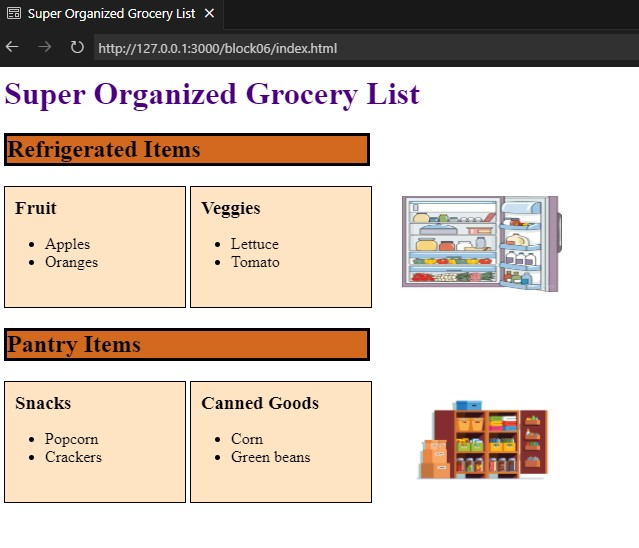

First Project
This was my first real project where I had freedom to learn about the fundamentals of CSS and HTML.This seemingly easy project taught me a lot about CSS styling and to not be afraid to try different styling until I find something that I like. My biggest challenge was to align the text boxes side by side. After that, I played with the styling for the picture and was able to get the picture to have the same dimensions as the text boxes.This was my first real project where I had freedom to learn about the fundamentals of CSS and HTML.This seemingly easy project taught me a lot about CSS styling and to not be afraid to try different styling until I find something that I like. My biggest challenge was to align the text boxes side by side. After that, I played with the styling for the picture and was able to get the picture to have the same dimensions as the text boxes.
